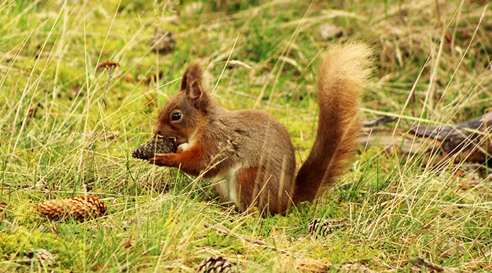

Latest Journals
Read about our latest adventures to Scotland and get some inspiration for your own journey!
View all journals
Highland Highlights
Explore the stunning nature, wildlife, and landscapes of the Scottish Highlands and Borders through some of our favourite photos.
Go to galleryGet in touch
Feel free to send us a message with any questions, comments, or if you would like to collaborate.
Contact us
